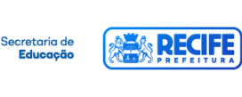

Traga nossas organizações públicas para o mundo digital e sustentável
Somos uma organização sem fins lucrativos criada com a missão de apoiar organizações públicas a se tornarem mais ágeis para se adaptarem ao mundo digital e sustentável.
O que fazemos
Ajudamos você que é gestor público a enfrentar os desafios da inovação e digitalização no setor público. Construímos com você soluções para desafios de equipe, governança, recursos e contratações.

Construir equipes de tecnologia
Apoiamos a criação de equipe interna e contratação de equipes.
- Por quê? Sem equipes de tecnologia adequadas e qualificadas, iniciativas de uso de tecnologias não prosperam. Por isso, é importante garantir uma equipe com capacidade para transformar sua organização com uso de tecnologia.
- O que fazemos? Apoiamos na definição de perfis necessários, da estrutura organizacional e na contratação de equipes multidisciplinares em modelo de Ateliê de software, para superar as dificuldades com as antigas contratações de fábrica de software
- Resultados esperados: Equipe estruturada e com capacidade de entrega de produtos digitais de qualidade mais rapidamente
Digitalizar gestão com uso de tecnologias abertas
Apoiamos a escolha de tecnologias abertas que gerem impacto, eficiência e autonomia.
- Por quê? Tecnologias abertas oferecem soluções comuns para necessidades compartilhadas entre diferentes organizações públicas. Mas além de entregarem resultados, geram mais eficiência nos gastos com tecnologias, garantem independência com relação aos fornecedores e permitem mais flexibilidade na entrega do serviço público.
- O que fazemos? Apoiamos na busca de software em código-aberto que resolvam problemas de gestão pública, no levantamento do mercado de fornecedores para essas soluções e na contratação para implantação e fornecimento e suporte dessas soluções para a organização pública.
- Resultados esperados: Tecnologia aberta contratada e implantada, gerando resultados para a organização pública.
Contratar soluções para problemas públicos
Apoiamos na definição de problemas públicos e chamada de soluções para o ecossistema de inovação.
- Por quê? Nem sempre a melhor solução para os problemas públicos sai de dentro das nossas organizações. Abrir problemas do governo para o ecossistema de inovação, permitindo o teste de soluções e sua contratação tem grande potencial para a resolução desses problemas de forma criativa.
- O que fazemos? Apoiamos na definição de problemas públicos e na realização da chamada de soluções para o ecossistema de inovação. Estruturamos a chamada tendo como base a licitação prevista no Marco Legal de Startups e Empreendedorismo, o que permite o pagamento dos testes pela organização pública, assim como sua contratação caso esses testes sejam bem sucedidos.
- Resultados esperados:Teste de soluções e contratação para a resolução do problema apresentado.
Parceiros, Beneficiários e Clientes
